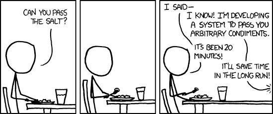
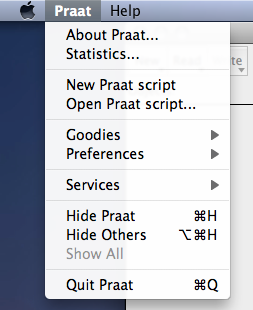
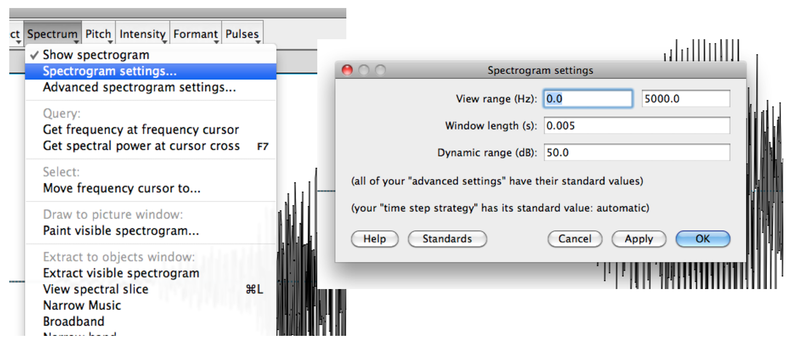
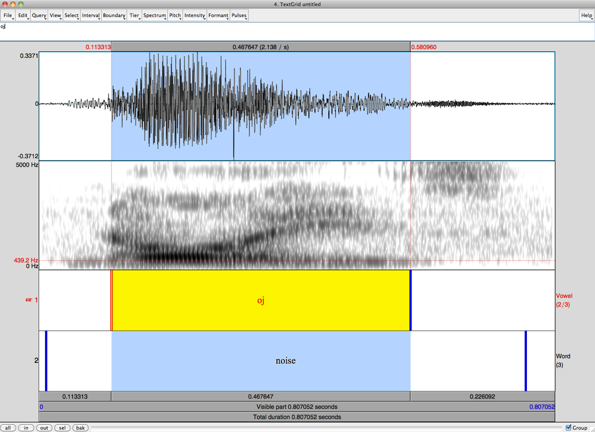
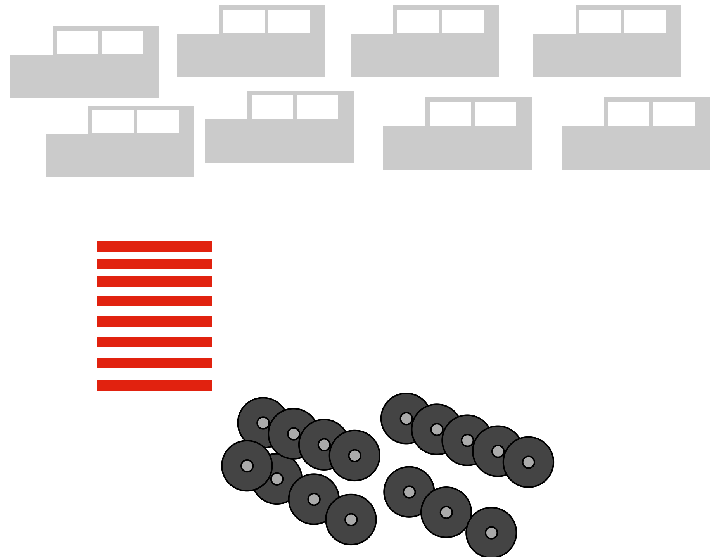
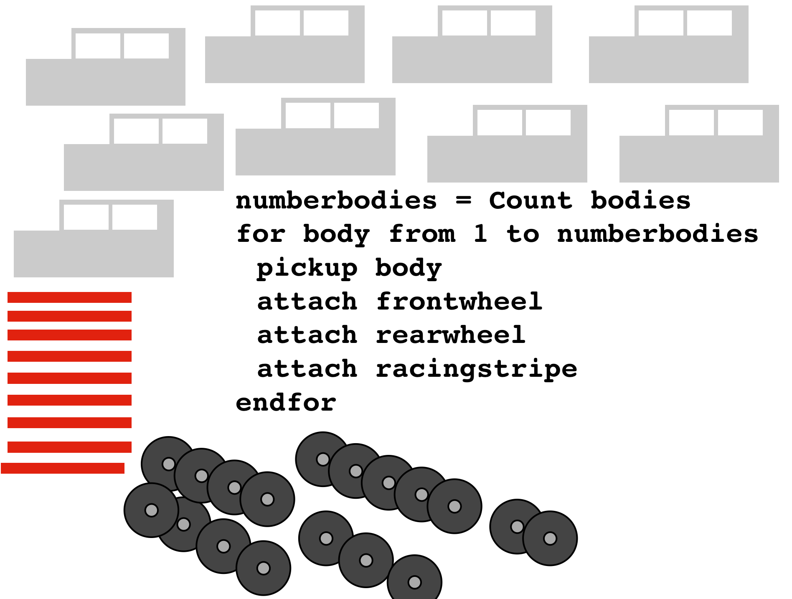
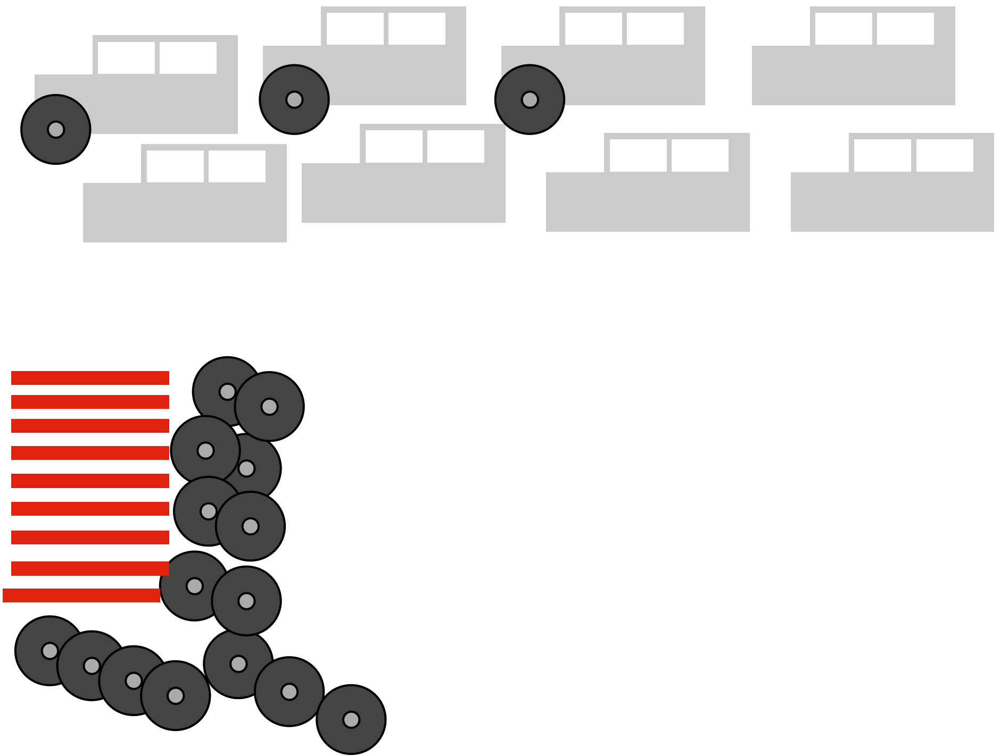
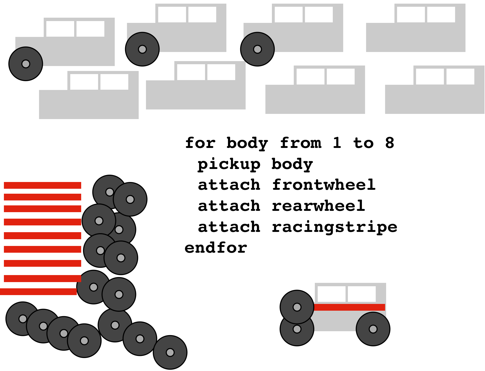
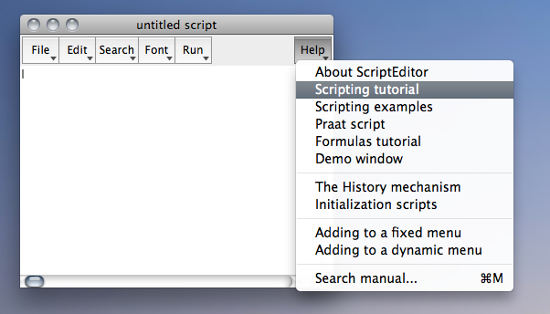
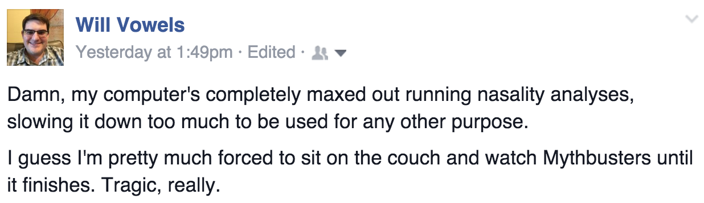

 --- # Praat Scripting for fun and (minimal) profit Will Styler - Fall 2016 --- ### What you *cannot* do with Praat scripting * Label your data/speech recognition * You can label known data with [“Forced Alignment"](http://linguisticmystic.com/2015/03/10/a-phoneticians-software-toolkit/) * Work with programs that aren’t Praat (*) * Run statistics on your data * ... but you can dump your data into R! * Anything that you can’t, eventually, do through the Praat UI * Generate measurements as consistent as hand measurements * *... but you can definitely do some things more easily!* --- ### What is a Praat script? * A file with a series of commands for Praat and comments for humans --- When scripting, you will need to be a bit more specific than you would with a human... * **Computers are stupid: They do exactly what you tell them to.** --- # This is a comment, Praat ignores lines that start with # # Get the selected sound soundname$ = selected$ ("Sound") select Sound 'soundname$' # Rename it! Rename... 'soundname$'_resampled # Resample it, then write to file! Resample... 10000 50 Write to WAV file... ‘soundname$‘_10000.wav --- Praat has changed some of the scripting commands to become "more modern" * **The ones in this slideshow still work, though!** --- ### Your very first Praat script * Let's automate something you do all the time, in the same way each time * *Like making a broadband vs. narrowband spectrogram* --- ### Open Praat, then go to "New Praat Script"  --- ### Capturing the commands using "History" Now, open a sound, and narrow the spectrogram <!-- .element: class="fragment" --> Then, go to the script window and “Paste History” <!-- .element: class="fragment" --> <img class="big" src="phonmedia/praat_script_menu.png"> <!-- .element: class="fragment" --> --- ## History saves everything you do in Praat * This is the best (and sometimes only) way to find different Praat commands. --- ### Almost done! * You now have a few lines, one of which looks like ... Spectrogram settings... 0 5000 0.05 50 * That’s your first script. Make that line the only thing in the script window * Now save the script someplace handy, narrowband.praat * Now, you can add it to any menu as described in Section 11.2.2 of [Using Praat for Linguistic Research](http://savethevowels.org/praat) * **You just wrote your first Praat script!** --- --- ## Praat scripting commands resemble the commands in the GUI --- ### Spectrogram settings... 0 5000 0.005 50  --- ### You can make the spectrogram broad-band again! * Spectrogram settings... 0 5000 **0.025** 50 --- ## To go fancier, we need more scripting knowledge! * (Some of this will be review for many of you, sorry!) --- ### Variables are like pronouns for data. “Remember whats-his-name, that guy who brought the great pecan pie last year?” <!-- .element: class="fragment" --> “Yeah...?”<!-- .element: class="fragment" --> “Invite whats-his-name to Thanksgiving this year!”<!-- .element: class="fragment" --> > whatshisname$ = Find guy who brought pecan pie <!-- .element: class="fragment" --> > party-invite whatshisname$ <!-- .element: class="fragment" --> --- ### Assigning Variables variable = 1000 variable = Get number of intervals... '1' start = Get starting point... 1 2 end = Get end point... 1 2 midpoint = start + ((end - start) / 2) --- ### Get vocal tract length from F3 at cursor f3h = Get third formant length = (1715/(4 * f3h)) lcm = length * 100 print Your vocal tract length is 'lcm:1' cm --- ### Getting a bit fancier Sometimes, you want to automate more than one command **You can put multiple lines into a file, and Praat runs through them at a single command!** # Get the selected sound soundname$ = selected$ ("Sound") select Sound 'soundname$' # Rename it! Rename... 'soundname$'_resampled # Resample it, then write to file! Resample... 10000 50 Write to WAV file... ‘soundname$‘_10000.wav --- ### The Button/Skynet continuum * You can write scripts of various degrees of complexity * Some scripts run a single command quickly, and act as a new button * The user is completely in control, but it’s relatively slow * Some scripts run a large process, but keep the user involved * The user yields some control to gain speed * Some scripts go through a large process on their own, without your help * Fastest, but you don’t control any of the process while it’s running --- ## You'll always trade control for speed of measurement * Be realistic about your needs, both in time and precision --- # Working across files --- ### To work on many files, you need more than just the file(s) you have open --- ### Giving Praat files and information * Praat doesn’t know what a vowel is, and can’t find them natively * Sound files are annotated for Praat by making “TextGrids”. ---  --- ### Textgrids are your way of giving Praat the information it can't figure out on its own * Once you’ve got files and textgrids, you can then pull in a whole batch of files * Praat can do something to every one of those files. * This happens through the magic of... --- ## 'for loops' --- Let's say you're building a lot of toy cars... <img src="phonmedia/pscript_finalcar.png"> ---  --- <img class="big" src="phonmedia/pscript_for2.png"> --- <img class="big" src="phonmedia/pscript_for3.png"> ---  --- ### 'for' loops For loops iterate through large amounts of data, doing the same thing each time. They always have the format for [var] from 1 to [other var], followed by an indented block, ended with an endfor select TextGrid Sound1 number_intervals = Get number of intervals... 2 for k from 1 to number_intervals int_start = Get starting point... 1 'k' int_end = Get end point... 1 'k' int_duration = (int_end - int_start) print int_duration endfor # This code gets the duration of every interval and prints it --- ## Taking control with 'if' statements ---  --- <img class="big" src="phonmedia/pscript_if2.png"> ---  --- <img class="big" src="phonmedia/pscript_if4.png"> --- ### 'if' statements Used when a given action happens *only if another condition is met* Usually take the form if [var] = [value], indented block, endif --- ### If you want an example... select TextGrid Sound1 number_intervals = Get number of intervals... 2 for k from 1 to number_intervals int_label$ = Get label of interval... 1 'k' if int_label$ = "v" int_start = Get starting point... 1 'k' int_end = Get end point... 1 'k' int_duration = (int_end - int_start) print int_duration endif endfor --- ### Other Residents of Script-land * \# at the start of the line means 'comment', Praat will ignore the line * Adding a :number to a variable name ( variable:2 ) will round to that number of decimal places * The print command will print whatever follows it into the info window * *print duration* will print the contents of the variable duration * *print “duration”* will print the word “duration” * This is useful for debugging (print variables which might be bad!) --- ### Praat is weird * Don’t put decimals or unicode in Filenames * The symbol for “not equal to” is \<\> in Praat, rather than != or something sane * You’ll have to describe folder/file locations differently on a Mac vs. Windows * directory$ = "c:\Documents\test data\" (Windows) * directory$ = "/Users/will/Documents/test data/" (Mac) * Praat won’t always agree with itself from window to window * A single quotation mark can be your worst enemy --- ### Sanity Checking * Humans only make sane measurements, computers don’t care * You know that his F0 is not 3000 Hz. Praat doesn’t. * You can figure out easily if the formant track is right. It definitely can’t. * Praat is a black box sometimes * **You need to double-check everything, or your data could be subtly wrong** --- ### Debugging * Your script will crash more times than it runs * Look at the error message, look at the line number it mentions, start there * Sometimes, the error message will give you good information * print the contents of variables, to make sure it's getting the right values * Use the “fail” command to crash the script at a given point (to make sure the script is getting there at all). * Just keep moving the command until you know just where the error occurs. --- ### Think before you automate * Automating a task will cost you time. Will you gain enough back? * Automating a task will add noise. Can you handle that? * Automating a task will remove control. Do you need to have control? --- ### ... but don't be too reluctant * Time spent coding something is regained when you reuse it * You can build on your past approaches * Re-running the data basically comes free. * Most importantly, though... * **You feel like a wizard.** --- <img class="big" src="humorimg/wizardcat.jpg"> --- ### Praat’s Scripting Help It's actually really good <!-- .element: class="fragment" -->  <!-- .element: class="fragment" --> --- ## In Defense of Cannibalism --- ### Steal code. * If you find a script that does 90% of what you want, just add the 10% yourself * Give the author of the code credit with a comment * Don’t trust anybody else’s math * Not even mine! * Some code is just bad --- ## The majority of my scripts are open source https://github.com/stylerw ### Please steal them. <!-- .element: class="fragment" --> --- ### You will hate your life if you Praat script * Even after 10 years, I still have to debug everything I write, and regularly screw up. * You will get 50 crashes, caused by 50 little mistakes * You will question why you're bothering with this, and where your life went wrong * You will feel like you are alone in your pain --- ### ... but suddenly, it will work * You'll realize that your script hasn't crashed * ... and that data is pouring into the designated file * ... and that the data looks OK * ... and then, eventually, you have the greatest realization ever ---  --- ## And you will realize that the world is a wonderful place * **... and you owe it all to Praat scripting** --- ### Get more scripting information Download useful examples (as well as a fun guide on using Praat) from: http://savethevowels.org/praat/ --- ### You can also see a more fleshed out version of this slide show [here](http://savethevowels.org/talks/praat_scripting.html#/) --- ### ... and please feel free to email me ***when*** you’re having trouble! --- # Let's look at an example! [Example script is here](https://raw.githubusercontent.com/stylerw/styler_praat_scripts/master/demo_formant_script.praat) --- # This part presents a form to the user form Measure Formants and Duration comment Sound file extension: optionmenu file_type: 2 option .aiff option .wav endform directory$ = chooseDirectory$ ("Choose the directory containing sound files and textgrids") # This will need to be changed to \ below for PC users directory$ = "'directory$'" + "/" resultfile$ = "'directory$'"+"formantlog.txt" header_row$ = "filename" + tab$ + "vowel" + tab$ + "Duration" + tab$ + "F1" + tab$ + "F2" + tab$ + "F3" + newline$ fileappend "'resultfile$'" 'header_row$' --- # List of all the sound files in the specified directory: Create Strings as file list... list 'directory$'*'file_type$' number_files = Get number of strings # This opens all the files one by one for j from 1 to number_files select Strings list filename$ = Get string... 'j' Read from file... 'directory$''filename$' soundname$ = selected$ ("Sound") filedur = Get total duration # identify associated TextGrid gridfile$ = "'directory$''soundname$'.TextGrid" if fileReadable (gridfile$) Read from file... 'gridfile$' select TextGrid 'soundname$' number_intervals = Get number of intervals... 1 --- # Go through each item for k from 1 to number_intervals select TextGrid 'soundname$' int_label$ = Get label of interval... 1 'k' #checks if interval has a label if int_label$ <> "" # Calc start, end, and duration of interval intstart = Get starting point... 1 'k' intend = Get end point... 1 'k' intdur = intend - intstart intmid = intstart + (intdur / 2) --- # Get all the formants! select Sound 'soundname$' To Formant (burg)... 0 5 5500 0.025 50 intf1 = Get value at time... 1 'intmid' Hertz Linear intf2 = Get value at time... 2 'intmid' Hertz Linear intf3 = Get value at time... 3 'intmid' Hertz Linear # Dump results into a file. result_row$ = "'filename$'" + tab$ + "'int_label$'" + tab$ + "'intdur'" + tab$ + "'intf1'" + tab$ + "'intf2'" + tab$ + "'intf3'" + newline$ fileappend "'resultfile$'" 'result_row$' endif endfor endif endfor # That's all!